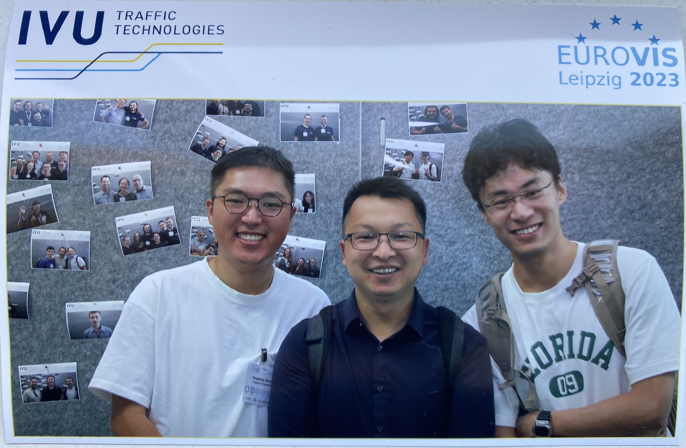
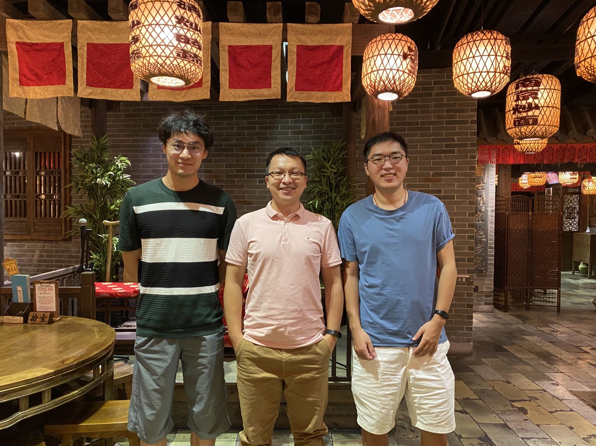
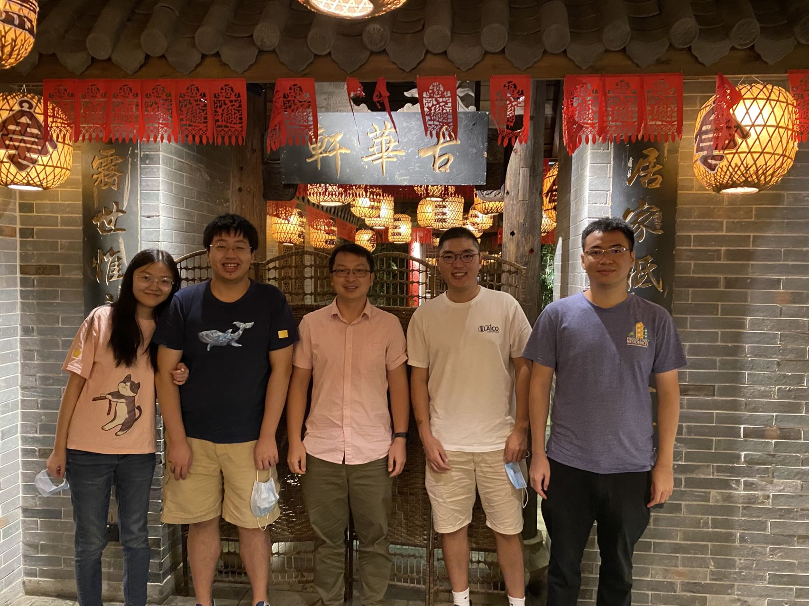
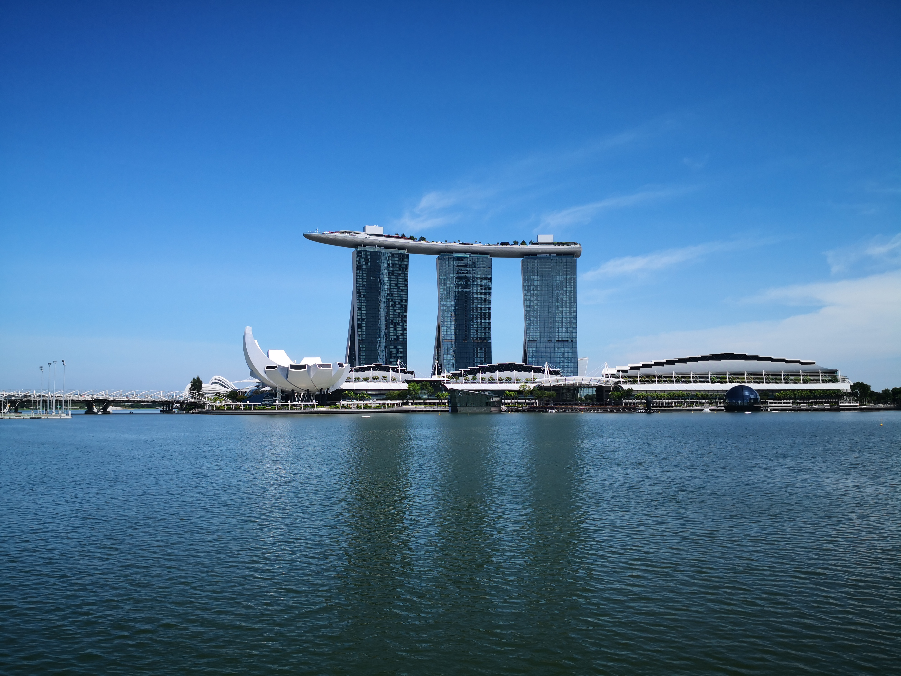
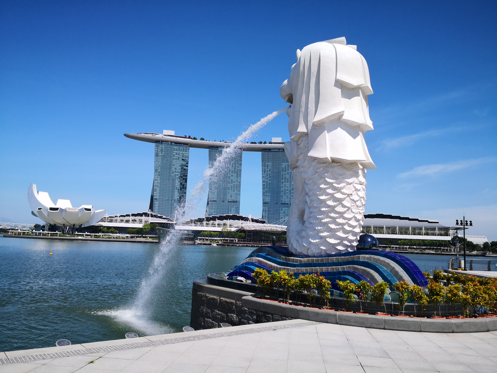
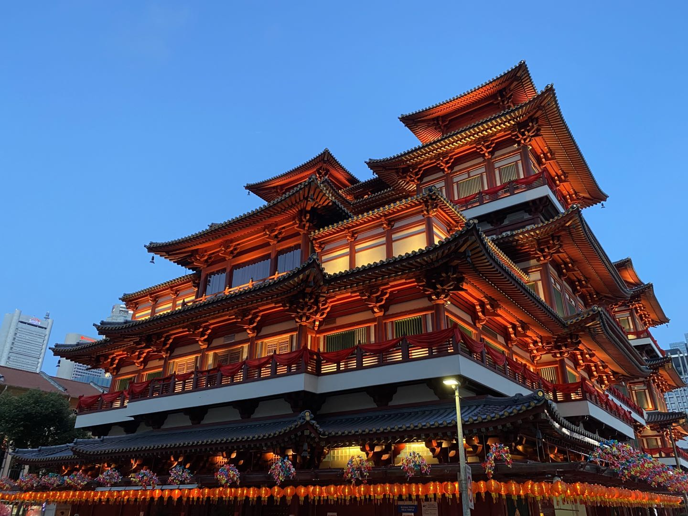
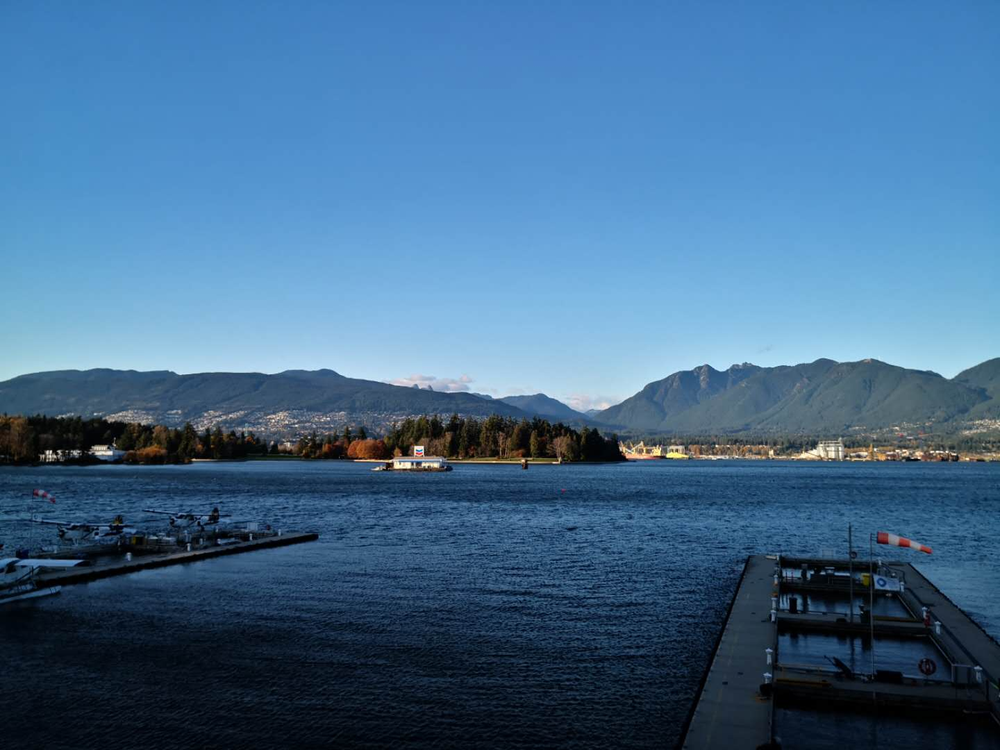
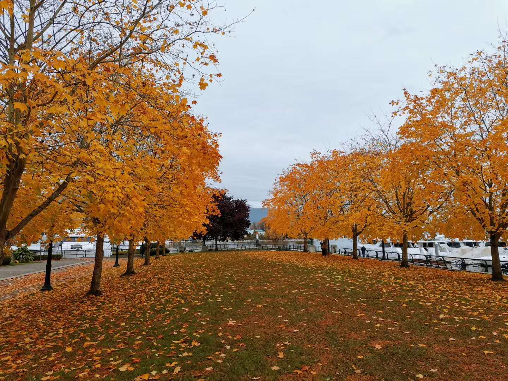
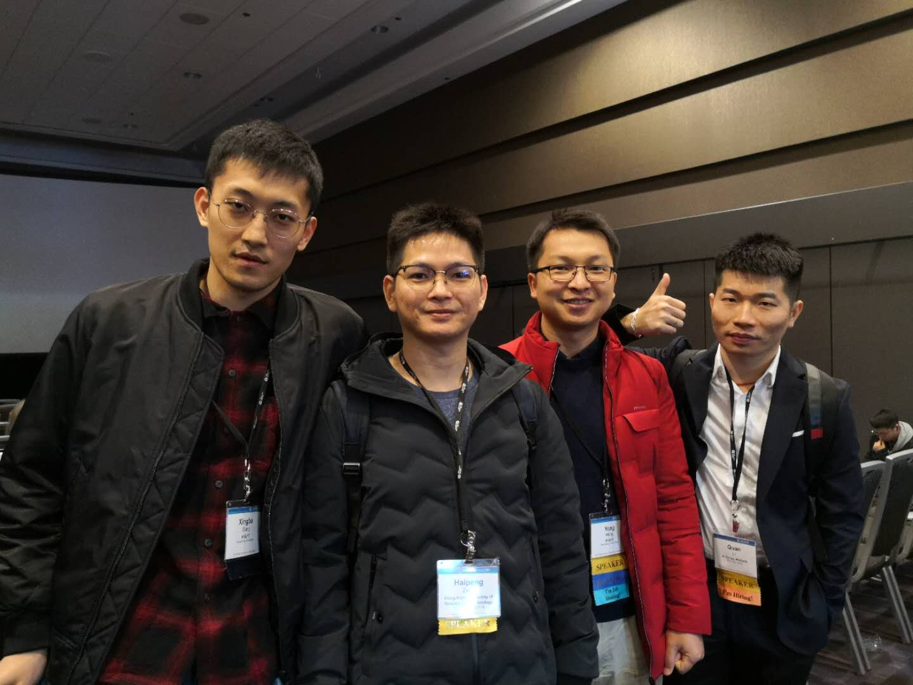
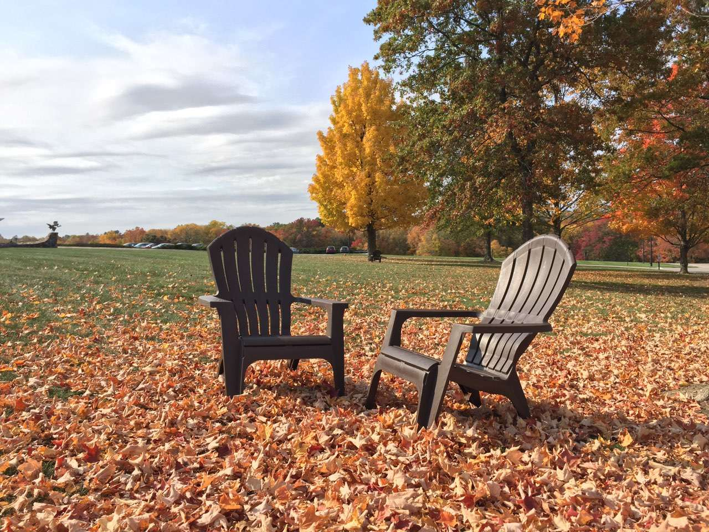

EuroVis23 trip with my two PhD students, @Leipzig Germany, 2023.
With my students at Bukit Timah Hill Summit, Singapore, 2022.

With my students at SMU, 2021.
 Photos taken with my mobile phone @ Singapore, 2020-2021.
 Sentosa, 2020

Sunset behind the National Museum of Singapore (about 200 meters from our school building ^_^), 2021
Chinatown(牛车水), Chinese New Year 2021
IEEE VIS19 trip @ Vancouver, Canada.
  
I gave a talk about our work on animated transitions in IEEE VIS 2018 in Berlin, Germany. You may refer to our project page for more details.
I gave a talk about our work in EuroVis 2018 in Brno.
It is always great to meet old and new friends --- a photo taken during my EuroVis18 trip.

Some photos taken during my visit to Brno and Prague in June 2018. Personally, I prefer Brno, which is more relaxing and quiet, to Prague, where there are always too many visitors.
We successfully passed the review on our video analysis project by the Innovation and Technology Bureau of Hong Kong. (March 15th, 2018)
I am a proud father! I always feel very grateful to my wife and parents, as they spend much more time than me in taking care of my lovely son and they have given me really strong support during my PhD years! (Photo taken in Guangzhou in April 2018)
I worked as a visiting research scholar in IBM T. J. Watson Research Center in New York from June to December in 2016. It is a wonderful experience of doing research there! Also, I really enjoy the beautiful views outside the main building of IBM Watson.
Trip to Washinton DC with my groupmates in November 2016.